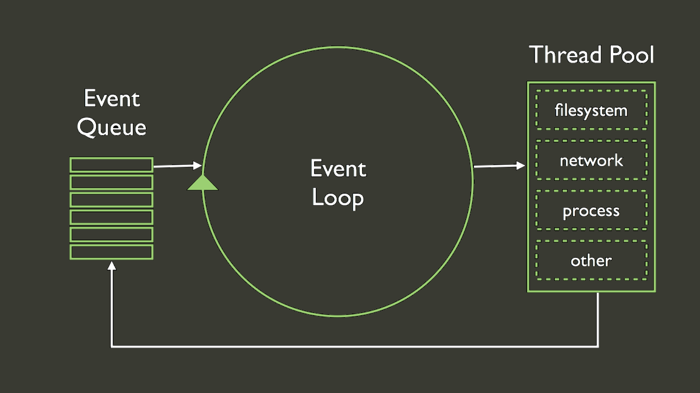

Node.js
Introdução
Created by Arthur Fücher / @thur
About...me
Arthur Fücher
FATEC SP - ADS
TOTVS - Framework SP
"Node.js® is a platform built on Chrome's JavaScript runtime for easily building fast, scalable network applications"
História
- 2009 - Ryan Dahl apresenta na JSConf
- 2010 - Popularidade
- 2011 - NPM (Node packaged modules)
- 2014 - "bug fixing, performance tuning, staying up to date with the V8 engine and tooling"
OpenSource: github.com/joyent/node
Instalando
Multiplataforma (Windows, Mac e Linux)
...
Node Version Manager - Linux/Mac Only
REPL
Single thread event-loop
Asynchronous
Non-blocking I/O
Event-loop
Async
Non-blocking I/O
Exemplos a seguir retirados da apresentação de Pedro Franceschi.
1.000 requests por segundo com conexão a uma API externa + I/O no DB = 1.000 threads por segundo
... se cada request leva em média 10 segundos ...
Em 9 segundos, teremos 9.000 threads!

1.000 requests por segundo com conexão a uma API externa + I/O no DB = 1 thread por segundo
... se cada request leva em média 10 segundos ...
Em 9 segundos, teremos 1 thread!
Dúvidas?
Contatos
Twitter: @thur
Github: afucher
Email: arthurfucher@gmail.com